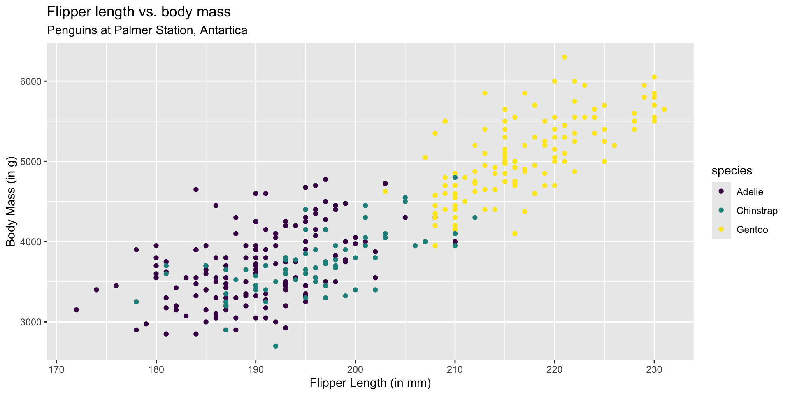

# Use code chunk option fig-align: center to center the plot.
ggplot(data = penguins, aes(x = flipper_length_mm, y = body_mass_g,
color = species)) +
geom_point() +
labs(x = "Flipper Length (in mm)",y = "Body Mass (in g)",
title = "Flipper length vs. body mass",
subtitle = "Penguins at Palmer Station, Antartica") +
scale_color_viridis_d()